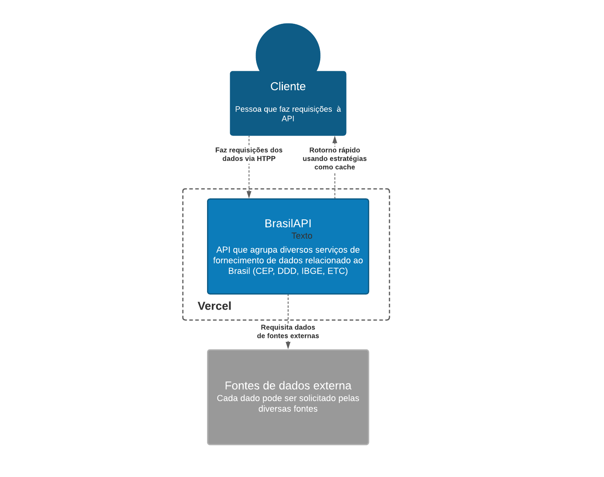

Documentação arquitetural do BrasilAPI
Autores
Este documento foi produzido por Izaquiel Nunes do Nascimento.
- Matrícula: 117111446
- Contato: izaquiel.nascimento@ccc.ufcg.edu.br
- Projeto documentado: https://github.com/BrasilAPI/BrasilAPI
Descrição Arquitetural – BrasilAPI
Este documento descreve a arquitetura do projeto BrasilAPI. Essa descrição, assim como a produção de seus diagramas, foi baseada principalmente no modelo C4.
Descrição Geral sobre o BrasilAPI
O BrasilAPI tem como objetivo disponibilizar de forma rápida e prática informações públicas como CEP, DDD, feriados nacionais, dados do IBGE, entre outros. Esse projeto centraliza e disponibiliza endpoints modernos com baixíssima latência utilizando tecnologias como Vercel Smart CDN responsável por fazer o cache das informações em atualmente 23 regiões distribuídas ao longo do mundo (incluindo Brasil).
A API
Objetivo Geral
Implementar uma api rest com alta disponibilidade para dados relacionados ao Brasil.
Objetivos Específicos
Se tornar uma plataforma onde qualquer possa contribuir e integrar serviços, aumentando assim a diversidade de dados fornecida pela api.
Atualmente a API conta com esses endpoints:
- cnpj/v1/{cnpj}
- cep/v1/{cep}
- ddd/v1/{ddd}
- banks/v1
- banks/v1/{code}
- veriados/v1/{ano}
- ibge/uf/v1
- ibge/uf/v1/{code}
Contexto
Logo abaixo temos um diagrama que mostra toda a simplicidade da api. O cliente é qualquer pessoa que deseja obter alguma informação que a api disponibiliza. É feita uma requisição HTTP e o BrasilAPI se responsabiliza por verificar se a informação está em cache ou então requisita a diversas fontes externas.

Containers
Temos apenas um container para a api, ele se encontra implantadado na Vercel. OBS: cada serviço que a api disponibiliza pode ter seus próprios containers, mas por se tratar de elementos externos não será retratado aqui.

Componentes
A API divide-se basicamente em três componentes:
- Os Middlewares, responsáveis por tratamento de cache, tratamento dos erros nas requisições e registro de logs da aplicação.
- A api propriamente dita, responsável pelo tratamento e retorno dos dados. Esse componente faz uso do componente de Services para buscar os dados.
- Services, responsável pela busca do dado requisitado nas mais variadas fontes de dados.

Visão de Informação
Abaixo temos um diagrama que mostra como a informação trafega na api. Primeiro o usuário faz uma requisição, ela é validada pelos middlewares, se tiver tudo ok, é verificado se o que foi pedido já se encontra em cache, se for encontrado algum erro é retornado pro usuário com alguma mensagem. Se a informação estiver em cache, é retornada imediatamente pro usuário, senão a api vai processar, pedindo para o serviço responsável buscar das fontes externas e retornando a informação requerida. Durante esse processo pode ocorrer algum erro e então o mesmo é retornado.